image 4 — a night scene (213 × 119)
A small, mostly dark photograph — a night-time scene in which the brightest object by far is an illuminated rectangular sign near the middle of the frame, with a couple of smaller lights above it. Also standardised to mean 0 and standard deviation 1.
Size: n = 213 rows × p = 119 columns · ‖X‖F = 159.2 · Variance in PC1: 40.5% · k for 95% / 99% of variance: 11 / 28
1. The original and its first ten approximations
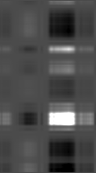
k = 1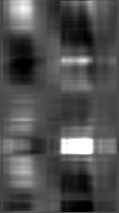
k = 2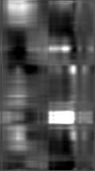
k = 3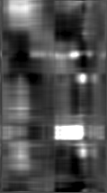
k = 4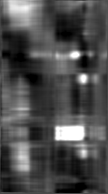
k = 5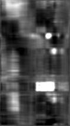
k = 6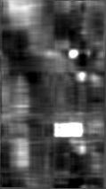
k = 7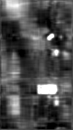
k = 9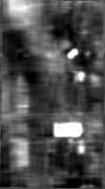
k = 10Because the image is dominated by a few bright objects on a dark background, the early approximations behave almost like a spotlight: k = 1–3 produce a smeared bright block where the sign is, and the surroundings arrive later. The sign becomes readable at about k = 10, the scene structure settles down by k = 15–20, and k = 30 is very close to the original apart from fine noise texture.
Beyond k = 10
Grayscale mapping: for every panel of this image, black and white are pinned to the 2nd and 98th percentile of the original matrix, so all panels are directly comparable and a few extreme pixels cannot wash the rest out.
2. Approximation error against k
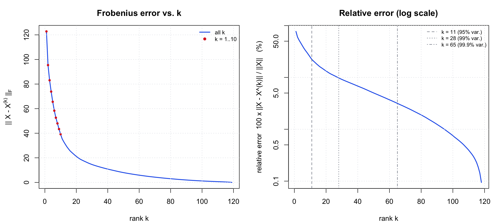
The decay is steady rather than dramatic: 40.5% of the variance at k = 1, 94% at k = 10, 95% at k = 11, 99% at k = 28 and 99.9% at k = 65. This image has the flattest spectrum of the three non-noise images — there is genuine detail spread across a lot of components — and because p = 119 is small, the break-even rank where the compressed form stops being smaller than the original arrives early, at k ≈ 76.
| k | ‖X − X(k)‖F | relative error | cumulative variance | numbers stored | vs. original |
|---|---|---|---|---|---|
| 1 | 122.81 | 77.14% | 40.50% | 332 | 1.3% |
| 2 | 95.42 | 59.93% | 64.08% | 664 | 2.6% |
| 3 | 83.08 | 52.18% | 72.77% | 996 | 3.9% |
| 4 | 73.86 | 46.39% | 78.48% | 1,328 | 5.2% |
| 5 | 65.57 | 41.19% | 83.04% | 1,660 | 6.5% |
| 6 | 58.34 | 36.64% | 86.57% | 1,992 | 7.9% |
| 7 | 52.63 | 33.06% | 89.07% | 2,324 | 9.2% |
| 8 | 47.99 | 30.14% | 90.91% | 2,656 | 10.5% |
| 9 | 43.38 | 27.25% | 92.57% | 2,988 | 11.8% |
| 10 | 39.19 | 24.62% | 93.94% | 3,320 | 13.1% |
| 15 | 27.31 | 17.16% | 97.06% | 4,980 | 19.6% |
| 20 | 21.18 | 13.30% | 98.23% | 6,640 | 26.2% |
| 30 | 14.56 | 9.14% | 99.16% | 9,960 | 39.3% |
| 50 | 7.99 | 5.02% | 99.75% | 16,600 | 65.5% |
| 119 (full) | 0.00 | 0.00% | 100.00% | 25,347 | 100.0% |
3. The first eigenvector and the first PC score
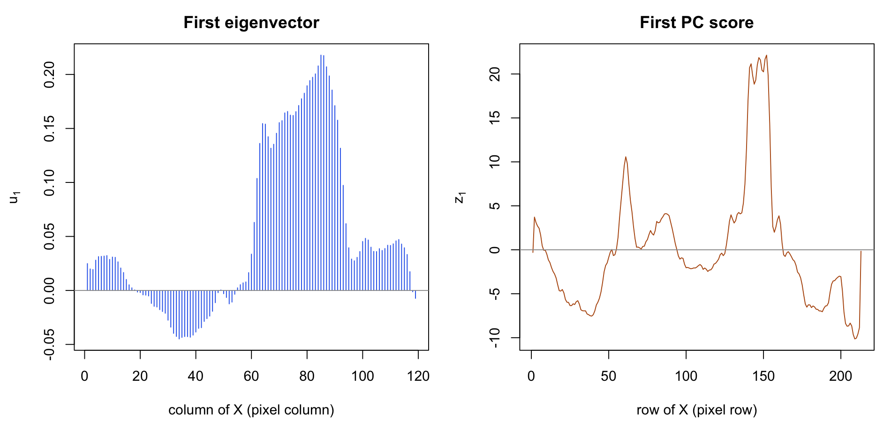
Interpretation
The first eigenvector locates the bright object horizontally. u1 has a large positive bump across columns 60–95 (peaking at 0.218 on column 85) and a negative dip across columns 25–50. It is a contrast pattern: the brightly lit right-of-centre band against the darker left band.
The first PC score locates it vertically. z1 has a tall peak at rows 140–155 — exactly where the illuminated sign sits — a secondary peak near row 60 where the smaller lights are, and its most negative values in the dark bottom rows. The outer product of a column bump and a row peak is a bright rectangle, which is precisely what the k = 1 panel shows. So the first principal component of this image is, in effect, "the sign": with a single component PCA chooses to encode the one high-contrast object and leaves the rest of the scene grey. Its correlation with row means is 0.79, weaker than for image 3, because it is tracking a localised object rather than overall row brightness.
4. How large does k need to be?
k = 20. That gives a 13.3% relative error and 98.2% of the variance, and everything in the scene is identifiable with the sign clearly legible; it uses 20 × 332 = 6,640 numbers versus 25,347, about a quarter of the original. k = 10 is acceptable if the only thing that matters is reading the sign, and k = 30 (9.1% error) is where the reconstruction stops looking degraded to me. Because this image is small, there is little room above that: past k ≈ 76 the "compressed" version is bigger than the original.